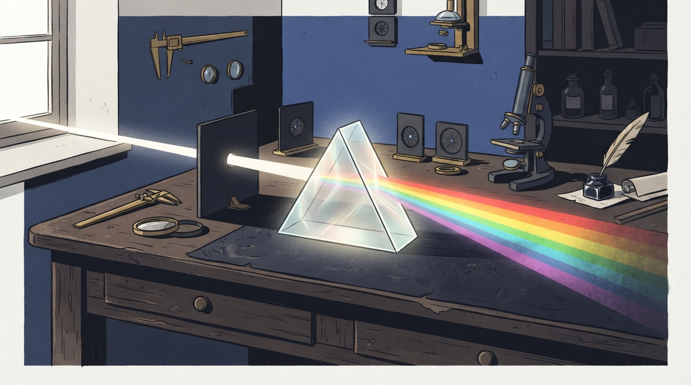
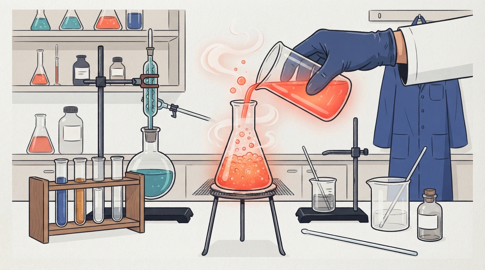
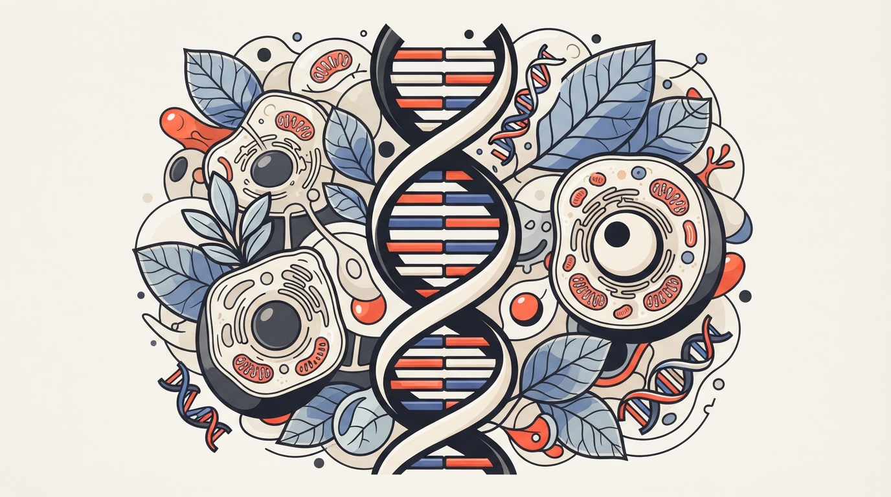
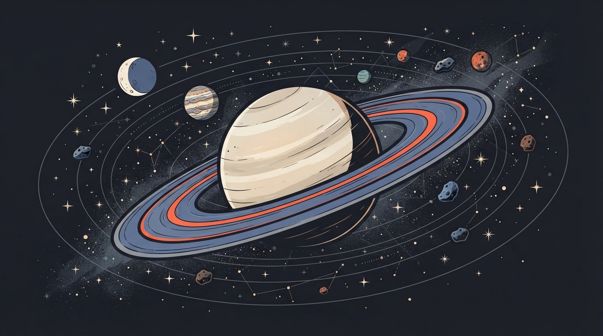
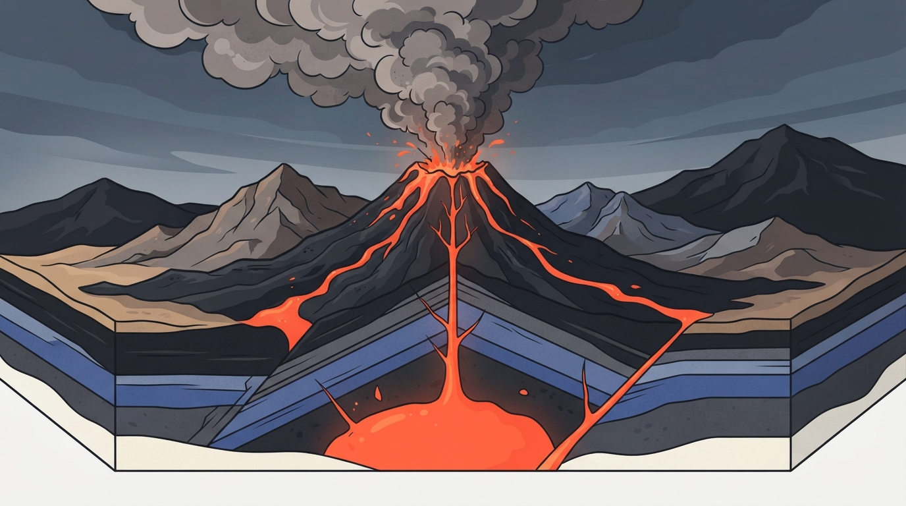
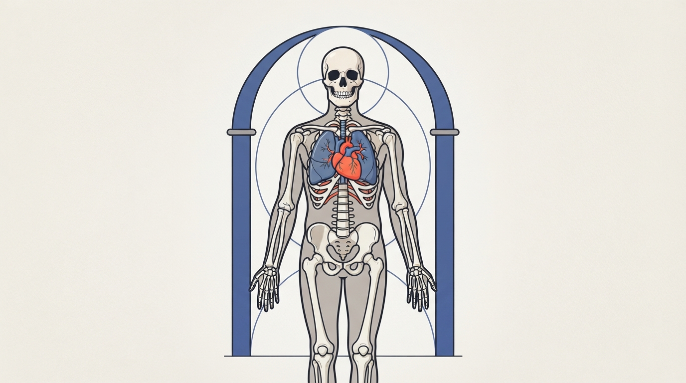
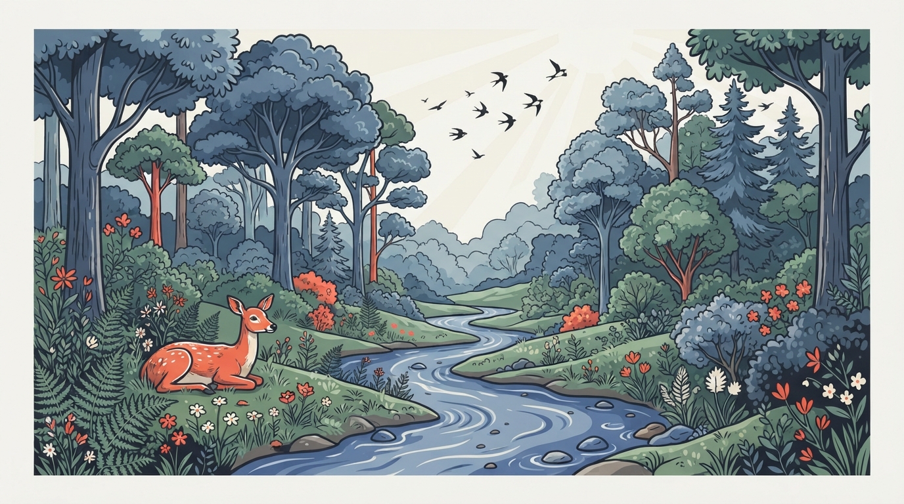
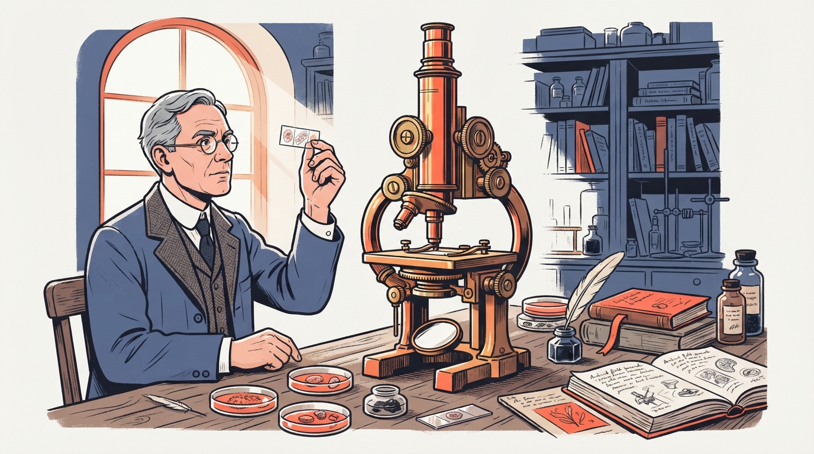

Science
Discover the laws, living systems, and discoveries that explain our natural world.
Ask a question, discover a principle.
Explore eight fascinating paths through science.

Physics Fundamentals
Explore motion, forces, energy, and the laws of nature.

Chemistry Essentials
Discover atoms, bonds, reactions, and the properties of matter.

Biology & Life
Explore cells, organisms, and the processes that sustain life.

Astronomy & Space
Discover stars, planets, galaxies, and the wider universe.

Earth Science
Understand rocks, plate tectonics, and our changing planet.

Human Anatomy
Explore the structures and systems of the human body.

Ecology & Environment
Discover ecosystems, biodiversity, and environmental change.

Great Scientific Discoveries
Explore groundbreaking discoveries, famous scientists, and scientific breakthroughs that changed our understanding of the world.